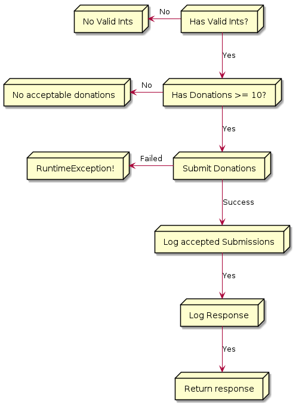

Elegance of Monadic Composition
Functional programming has many interesting concepts but it can be hard to find practical applications for it in everyday work. In this post, I will explain how Monadic Composition can be used write elegant and easy to understand code.
Consider an API Donatron that accepts donations. The API's algorithm is as follows:
- Accepts donations as list of strings
- Should have a few valid integer donations
-
Else goto
6. Response:No Valid Ints
-
Else goto
- Should have a few donations of value 10 or above
-
Else goto
6. Response:No Acceptable Donations Found
-
Else goto
- Valid donations to external service should succeed
-
Else
RuntimeException
-
Else
- Log all accepted submissions
- Log Response
- Return Response
End goal is to be able to execute Donatron.donate function and get correct response.
Algorithm as a flowchart

Using IO we can model the algorithm by using
-
flatmapon success -
IO.raiseErroron failure
import cats.effect.IO class Donatron() { def donate(req: Request): IO[Response] = checkForValidInts(req) .flatMap(checkForMinimumDonationAmount) .flatMap(submitDonations) .flatMap(logAndReturnAcceptedDonations) .flatMap(logAndReturnResponse) def checkForValidInts(req: Request): IO[ValidDonationsFound] = ??? def checkForMinimumDonationAmount(data: ValidDonationsFound): IO[DonationsAboveMinimumFound] = ??? def submitDonations(data: DonationsAboveMinimumFound): IO[AcceptedDonations] = ??? def checkForAboveMaxDonationAmount(data: List[String]): IO[List[String]] = ??? def logAndReturnResponse(data: RawData): IO[Response] = logResponse(data) >> IO.delay(data.toResponse) def logResponse(data: RawData): IO[Unit] = IO.delay(println(s"Response: ${data.toLogMessage}")) def logAndReturnAcceptedDonations(donations: AcceptedDonations): IO[AcceptedDonations] = IO .delay(println(s"Valid Donations: ${donations.toLogMessage}")) .map(_ => donations) }
Complete code can be found at Donatron Example: IO
At first this seems to solve our problem but we are logging & returning response only in case of success because IO.raiseError will short circuit the chain and hence, further functions will not be called.
IO Algorithm Flowchart 
Put another way, we have a set of functions that need to be executed in case of success and a few which should be executed regardless of how many functions are successfully executed. There are many ways in Functional Programming to make this work but in our case let's use EitherT.
EitherT[F[_], A, B]
-
F[_]is a Higher Kinded Type likeIO -
Ais the type of left value -
Bis the type of right value
The beauty of EitherT is that we can chain/compose our functions. This is great and all but now comes the question, "How can we reuse our existing functions?" This is where the elegance of EitherT truly shines for it has methods which will help us to convert our IOs into EitherT.
We will take each of the functions we defined earlier and convert them to EitherT. In order to do this, we will introduce new case classes that will be used to encapsulate errors.
So get started...
checkForValidInts
def checkForValidInts(req: Request): IO[ValidDonationsFound] = { val (validInts, nonInts) = req.values.partition(value => Try(value.toInt).isSuccess) validInts.isEmpty match { case true => IO.raiseError(new RuntimeException(NoValidInts(nonInts).show)) case false => IO.pure( ValidDonationsFound(validInts = validInts, invalidInts = nonInts) ) } }
After conversion:
def checkForValidIntsET(req: Request): EitherT[IO, RawData, ValidDonationsFound] = { val parts = req.values.partition(value => Try(value.toInt).isSuccess) EitherT.fromEither( parts match { case (noValidInts: List[String], allNonInts: List[String]) if noValidInts.isEmpty => Left(NoValidInts(invalidInts = allNonInts)) case (validDonations: List[String], nonInts: List[String]) => Right(ValidDonationsFound(invalidInts = nonInts, validInts = validDonations)) } ) }
checkForMinimumDonationAmount
def checkForMinimumDonationAmount(data: ValidDonationsFound): IO[DonationsAboveMinimumFound] = { val (aboveMinimum, belowMinimum) = data.validInts.partition(_.length > 1) aboveMinimum.isEmpty match { case true => IO.raiseError( new RuntimeException( NoValuesAboveMinimum( invalidInts = data.invalidInts, lessThanMinimum = belowMinimum ).show ) ) case false => IO.pure( DonationsAboveMinimumFound( aboveMinimum = aboveMinimum, lessThanMinimum = belowMinimum, invalidInts = data.invalidInts ) ) } }
After conversion:
def checkForMinimumDonationAmountET(data: ValidDonationsFound): EitherT[IO, RawData, DonationsAboveMinimumFound] = { val parts = data.validInts.partition(_.length > 1) EitherT.fromEither( parts match { case (noneAboveMinimum: List[String], allBelowMinimum: List[String]) if noneAboveMinimum.isEmpty => Left( NoValuesAboveMinimum( invalidInts = data.invalidInts, lessThanMinimum = allBelowMinimum ) ) case (aboveMinimum: List[String], belowMinimum: List[String]) => Right( DonationsAboveMinimumFound( invalidInts = data.invalidInts, lessThanMinimum = belowMinimum, aboveMinimum = aboveMinimum ) ) } ) }
submitDonations
def submitDonations(data: DonationsAboveMinimumFound): IO[AcceptedDonations] = checkForAboveMaxDonationAmount(data.aboveMinimum) .map { validDonations => AcceptedDonations( donations = validDonations, invalidInts = data.invalidInts, lessThanMinimum = data.lessThanMinimum ) }
After conversion:
def submitDonationsET(data: DonationsAboveMinimumFound): EitherT[IO, RawData, AcceptedDonations] = EitherT.liftF(submitDonations(data))
logAndReturnAcceptedDonations
def logAndReturnAcceptedDonations(donations: AcceptedDonations): IO[AcceptedDonations] = IO .delay(println(s"Valid Donations: ${donations.toLogMessage}")) .map(_ => donations)
After conversion:
def logAndReturnAcceptedDonationsET(donations: AcceptedDonations): EitherT[IO, RawData, AcceptedDonations] = EitherT.liftF(logAndReturnAcceptedDonations(donations))
Now that we have EitherT versions for all of the required functions, let's plug them into our donate function.
def donate(req: Request): IO[Response] = checkForValidInts(req) .flatMap(checkForMinimumDonationAmount) .flatMap(submitDonations) .flatMap(logAndReturnAcceptedDonations) .flatMap(logAndReturnResponse)
After conversion
def donate(req: Request): IO[Response] = checkForValidIntsET(req) .flatMap(checkForMinimumDonationAmountET) .flatMap(submitDonationsET) .flatMap(logAndReturnAcceptedDonationsET) .flatMap(logAndReturnResponse)
One more thing...
If we try to run the code as-is, we get following compilation error:
[info] Compiling 1 Scala source to /home/ent/Documents/Code/DonatronExample/target/scala-2.12/classes ... [error] /home/ent/Documents/Code/DonatronExample/src/main/scala/donatron/Donatron.scala:23:16: type mismatch; [error] found : cats.effect.IO[donatron.models.Response] [error] required: cats.data.EitherT[cats.effect.IO,?,?] [error] .flatMap(logAndReturnResponse) [error] ^ [error] /home/ent/Documents/Code/DonatronExample/src/main/scala/donatron/Donatron.scala:23:15: polymorphic expression cannot be instantiated to expected type; [error] found : [D]cats.data.EitherT[cats.effect.IO,donatron.models.RawData,D] [error] required: cats.effect.IO[donatron.models.Response] [error] .flatMap(logAndReturnResponse) [error] ^ [error] two errors found [error] (Compile / compileIncremental) Compilation failed [error] Total time: 1 s, completed Nov 23, 2019 9:26:16 PM
Basically logAndReturnResponse expects IO[Response] but logAndReturnAcceptedDonationsET returns an EitherT. So how can we solve this? One way would be to pattern match on EitherT.value and convert it to Response. However this isn't elegant.
Let's take a step back and look at our trait definitions for RawData, RawDataSuccess & RawDataErr.
sealed trait RawData { def toLogMessage: LogMessage def toResponse: Response = Response(toLogMessage.value) } sealed trait RawDataSuccess extends RawData sealed trait RawDataErr extends RawData
RawDataSuccess & RawDataErr extend RawData and we are using EitherT which has the method merge! This means we can merge our EitherT to get a value of type RawData1.
So let's add a .merge and see if the compiler is happy with us.
def donate(req: Request): IO[Response] = checkForValidIntsET(req) .flatMap(checkForMinimumDonationAmountET) .flatMap(submitDonationsET) .flatMap(logAndReturnAcceptedDonationsET) .merge .flatMap(logAndReturnResponse)
[info] Compiling 1 Scala source to /home/ent/Documents/Code/DonatronExample/target/scala-2.12/classes ... [success] Total time: 1 s, completed Nov 23, 2019 9:48:13 PM
Complete code can be found at Donatron Example: master
-
It is for this reason that we defined the
Leftof all ourEitherTs asRawDatainstead ofRawDataErr. ↩